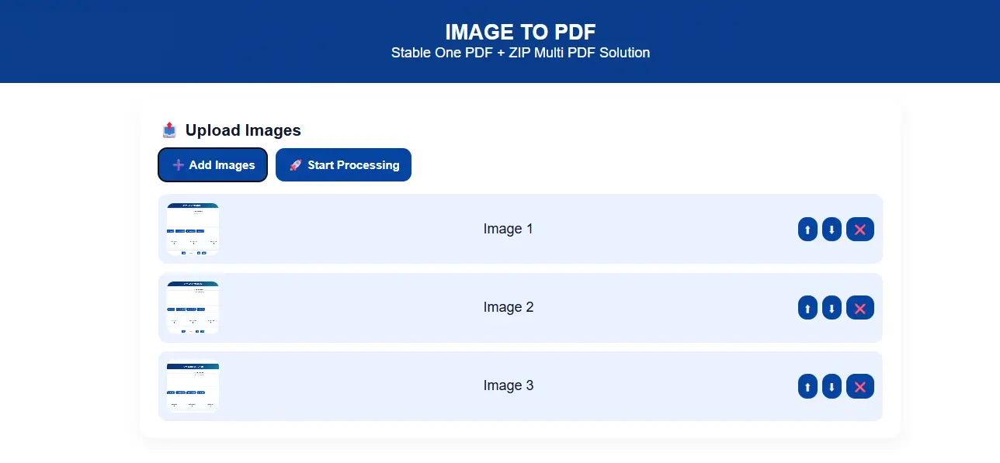
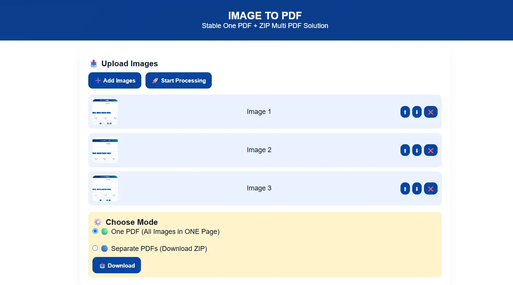

Convert Images to PDF Online Free
Need to convert multiple images into PDF files quickly? Whether you're creating reports, sharing documents, submitting assignments, organizing scanned pages, or combining photos into a single PDF, the process should be simple and fast.
With Vicohi Image to PDF Converter, users can upload up to 10 images at once and instantly generate PDF files. You can combine all images into one PDF document or create separate PDFs for each image and download them together in a ZIP file.
Convert Images to PDF NowWhat Is an Image to PDF Converter?
An Image to PDF Converter allows users to transform image files into PDF documents without installing software. Instead of manually creating PDFs, the tool automatically converts uploaded images into downloadable PDF files.
The tool supports popular image formats including JPG and PNG.
Why Convert Images to PDF?
PDF files are easier to share, print, archive, and upload compared to individual image files.
- Create professional documents
- Combine multiple images into one file
- Share files more easily
- Improve document organization
- Prepare files for printing
- Reduce document management hassle
If you're working with Excel or CSV files before creating reports, you can also use our Duplicate Finder guide to remove duplicate rows and clean your data.

How to Convert Images to PDF Using Vicohi
Step 1: Upload Your Images
Upload up to 10 images at a time. The tool supports multiple image formats and instantly prepares them for PDF generation.
- JPG Images
- JPEG Images
- PNG Images
Step 2: Choose Your PDF Mode
The converter provides two flexible output modes depending on your requirements.
🟢 One PDF (All Images in ONE PDF)
Combine all uploaded images into a single PDF document and download one file containing all pages.
🔵 Separate PDFs (Download ZIP)
Create separate PDF files for each uploaded image and download them together inside a ZIP archive.
Step 3: Rearrange Image Order
Need a specific page sequence?
The tool includes built-in Up and Down controls that allow users to rearrange image positions before generating the final PDF.
For example, if a particular image should appear first, simply move it to the top before creating the PDF.
Step 4: Remove Unwanted Images
Accidentally uploaded the wrong image?
Use the Delete option to remove any image before PDF generation. This helps ensure only the required images are included.

Step 5: Download Your PDF Files
After reviewing your images, click the Download button to generate your PDF files instantly.
- Download One Combined PDF
- Download Separate PDFs in ZIP Format
- Fast PDF Generation
- No Software Installation Required
Need to compare spreadsheet records before exporting reports? Read our guide on finding matching data in Excel and CSV files using Vicohi Raw Data Matcher.
Advanced Features of Vicohi Image to PDF Converter
Upload Up to 10 Images
Users can upload up to 10 images in a single session for quick PDF creation.
One PDF Mode
Merge all uploaded images into one organized PDF document.
Separate PDF Mode
Generate individual PDF files for each image and download everything as a ZIP archive.
Image Reordering
Move images up or down to control the final PDF page order.
Image Removal Option
Delete unwanted images before generating the final PDF file.
Fast Processing
PDF files are generated quickly, allowing users to download results within seconds.
Benefits of Using Vicohi Image to PDF Converter
- Convert Multiple Images to PDF
- Supports JPG, JPEG and PNG
- One PDF or Separate PDFs
- ZIP Download Support
- Image Reordering Feature
- Delete Unwanted Images
- Fast PDF Generation
- No Registration Required
- Simple User Interface
Who Can Use This Tool?
- Students
- Teachers
- Business Professionals
- Office Workers
- Freelancers
- Researchers
- Photographers
- Anyone Working with Documents
Frequently Asked Questions
How many images can I upload?
You can upload up to 10 images in a single conversion session.
Can I combine all images into one PDF?
Yes. Select the One PDF mode to merge all uploaded images into a single PDF file.
Can I download separate PDFs?
Yes. Choose Separate PDFs mode to generate individual PDFs and download them as a ZIP file.
Can I change image order before conversion?
Yes. Use the Up and Down controls to rearrange image positions before generating the PDF.
Can I delete uploaded images?
Yes. Any unwanted image can be removed before conversion using the Delete option.
Is Vicohi Image to PDF Converter free?
Yes. Users can upload images, generate PDFs, reorder files, and download results without cost.
Ready to Convert Images into PDF?
Upload up to 10 images, arrange them in your preferred order, and download your PDF instantly.
🚀 Open Image to PDF Converter